Contour Plots, Heat Maps, and Into High-Dimensional Data
2025-03-12
Announcements, previously, and today…
HW5 is due next Wednesday March 19th by 11:59 PM ET
As part of Homework 5, you’ll form groups for final projects
Teams should be 3-4 students, you can pick your teammates or be randomized to a team
Goal of the project: create and interpet hiqh-quality visualizations for a dataset of your choice
Project requirements and rubrics are available on Canvas
EDA reports are graded as as group, while presentations are graded individually
HW5 is short so you have time to form teams and explore datasets
You do NOT have lab this week
Last time:
LOESS: bunch of little linear regressions glued together
Pairs plots: convenient wrapper to creating several visualizations at once
TODAY: Contour Plots and Heat Maps
2D quantitative data
We’re working with two variables: \((X, Y) \in \mathbb{R}^2\), i.e., dataset with \(n\) rows and 2 columns
Goals:
describing the relationships between two variables
describing the conditional distribution \(Y | X\) via regression analysis
TODAY: describing the joint distribution \(X,Y\) via contours, heatmaps, etc.
Few big picture ideas to keep in mind:
scatterplots are by far the most common visual
regression analysis is by far the most popular analysis (you have a whole class on this…)
relationships may vary across other variables, e.g., categorical variables
What about focusing on the joint distribution?
Example dataset of pitches thrown by baseball superstar Shohei Ohtani
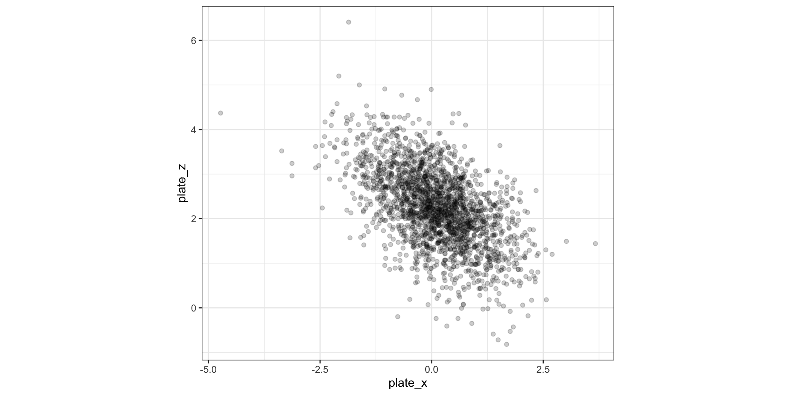Going from 1D to 2D density estimation
In 1D: estimate density \(f(x)\), assuming that \(f(x)\) is smooth:
\[ \hat{f}(x) = \frac{1}{n} \sum_{i=1}^n \frac{1}{h} K_h(x - x_i) \]
In 2D: estimate joint density \(f(x_1, x_2)\)
\[\hat{f}(x_1, x_2) = \frac{1}{n} \sum_{i=1}^n \frac{1}{h_1h_2} K(\frac{x_1 - x_{i1}}{h_1}) K(\frac{x_2 - x_{i2}}{h_2})\]
In 1D there was one bandwidth, now we have two bandwidths
- \(h_1\): controls smoothness as \(X_1\) changes, holding \(X_2\) fixed
- \(h_2\): controls smoothness as \(X_2\) changes, holding \(X_1\) fixed
Again Gaussian kernels are the most popular…
So how do we display densities for 2D data?

How to read contour plots?
Best known in topology: outlines (contours) denote levels of elevation

Display 2D contour plot
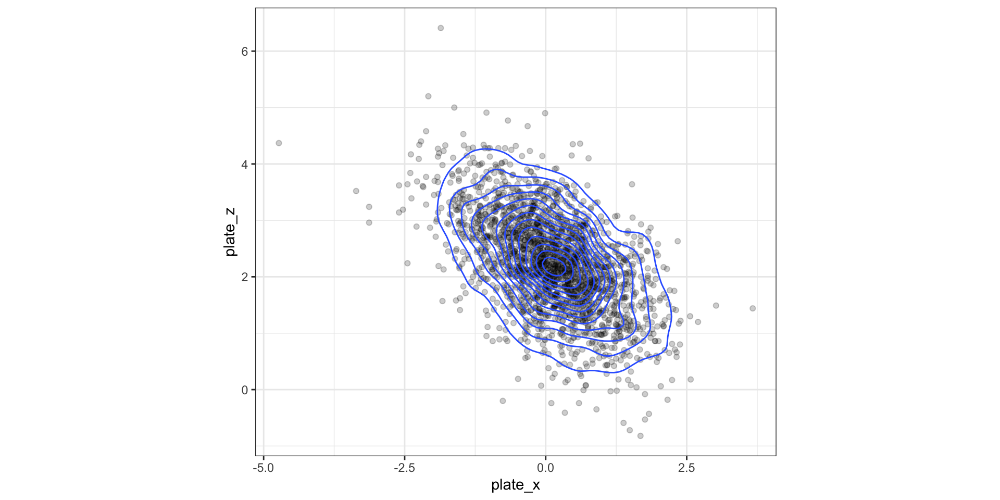Display 2D contour plot
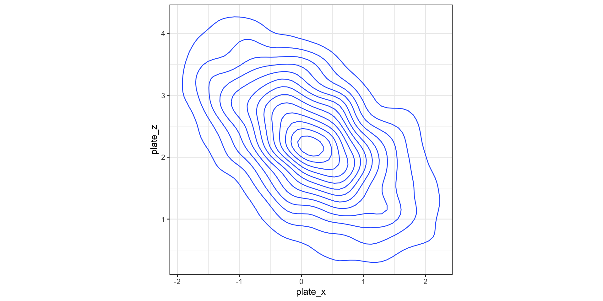Display 2D contour plot
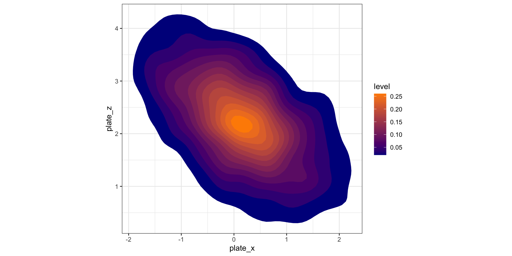Visualizing grid heat maps
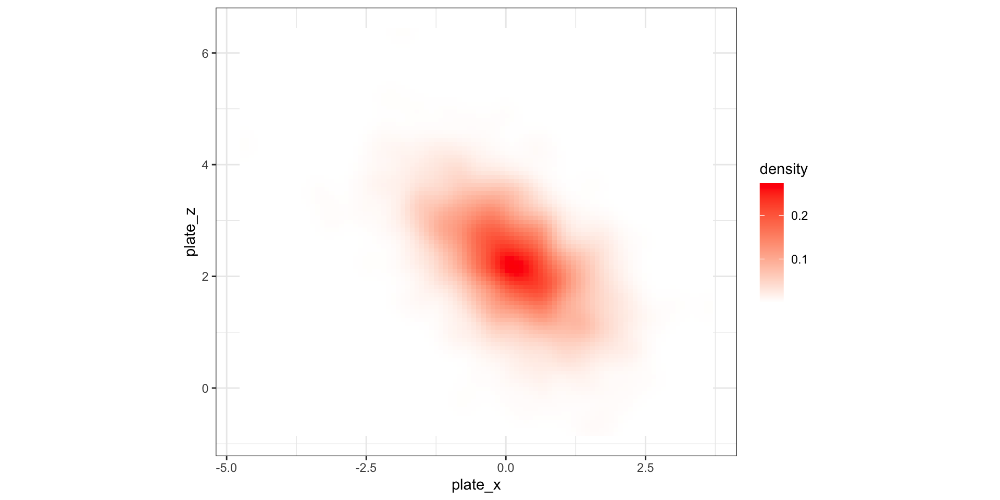Alternative idea: hexagonal binning
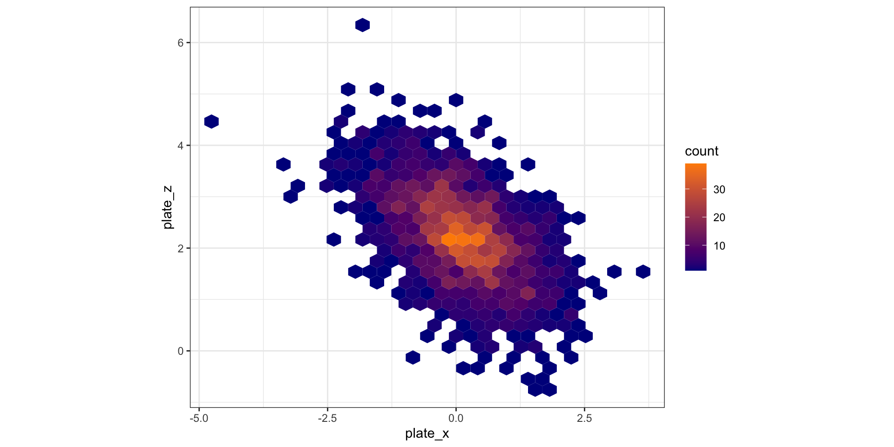LeBron James’ shots from hoopR
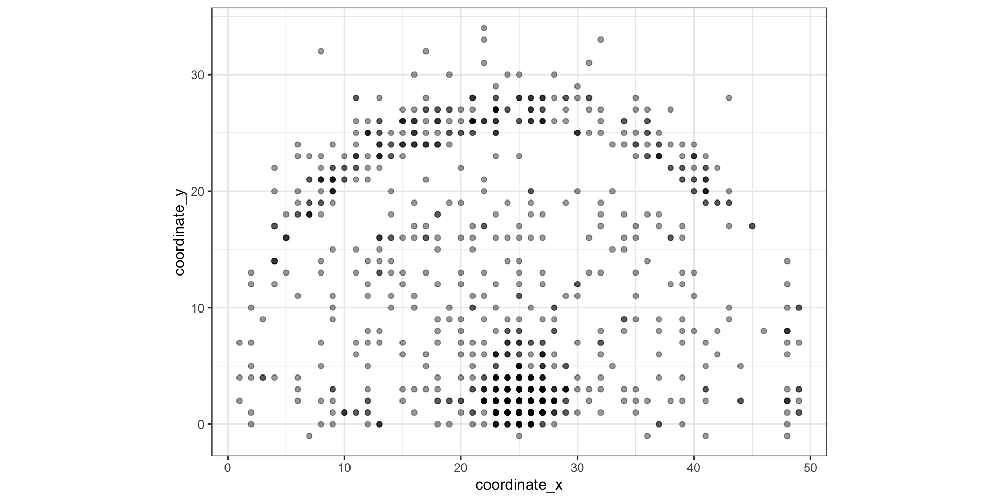Display 2D contour plot
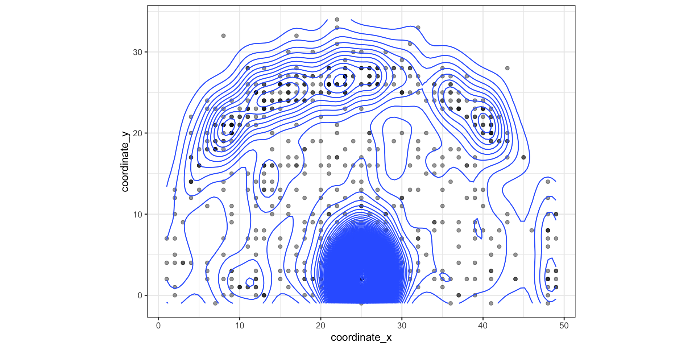Alternative idea: hexagonal binning
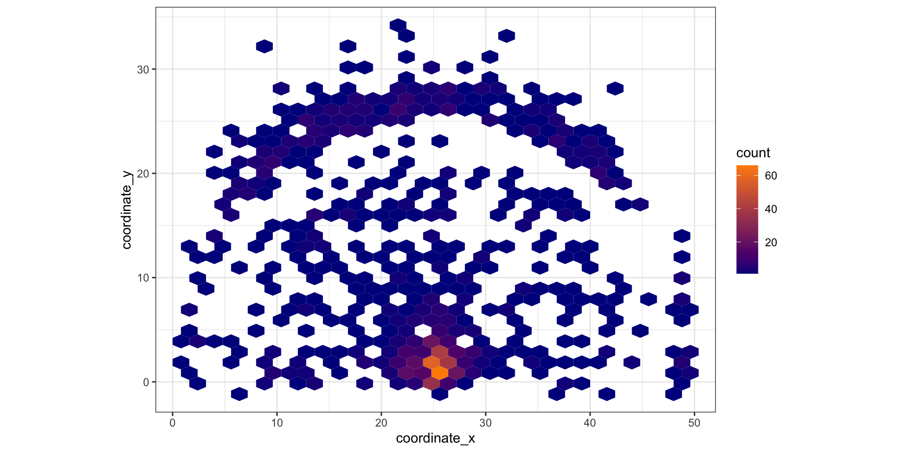What about high-dimensional data?
Consider this dataset containing nutritional information about Starbucks drinks:
starbucks <-
read_csv("https://raw.githubusercontent.com/rfordatascience/tidytuesday/master/data/2021/2021-12-21/starbucks.csv") |>
# Convert columns to numeric that were saved as character
mutate(trans_fat_g = as.numeric(trans_fat_g), fiber_g = as.numeric(fiber_g))
starbucks |> slice(1)# A tibble: 1 × 15
product_name size milk whip serv_size_m_l calories total_fat_g
<chr> <chr> <dbl> <dbl> <dbl> <dbl> <dbl>
1 brewed coffee - dark roa… short 0 0 236 3 0.1
# ℹ 8 more variables: saturated_fat_g <dbl>, trans_fat_g <dbl>,
# cholesterol_mg <dbl>, sodium_mg <dbl>, total_carbs_g <dbl>, fiber_g <dbl>,
# sugar_g <dbl>, caffeine_mg <dbl>How do we visualize this dataset?
- Tedious task: make a series of pairs plots (one giant pairs plot would overwhelming)
What about high-dimensional data?
starbucks <-
read_csv("https://raw.githubusercontent.com/rfordatascience/tidytuesday/master/data/2021/2021-12-21/starbucks.csv") |>
# Convert columns to numeric that were saved as character
mutate(trans_fat_g = as.numeric(trans_fat_g), fiber_g = as.numeric(fiber_g))
starbucks |> slice(1)# A tibble: 1 × 15
product_name size milk whip serv_size_m_l calories total_fat_g
<chr> <chr> <dbl> <dbl> <dbl> <dbl> <dbl>
1 brewed coffee - dark roa… short 0 0 236 3 0.1
# ℹ 8 more variables: saturated_fat_g <dbl>, trans_fat_g <dbl>,
# cholesterol_mg <dbl>, sodium_mg <dbl>, total_carbs_g <dbl>, fiber_g <dbl>,
# sugar_g <dbl>, caffeine_mg <dbl>Goals to keep in mind with visualizing high-dimensional data:
Visualize structure among observations based on distances and projections (next lecture)
Visualize structure among variables using correlation as “distance”
Correlogram to visualize correlation matrix
Use the ggcorrplot package:
Options to customize correlogram
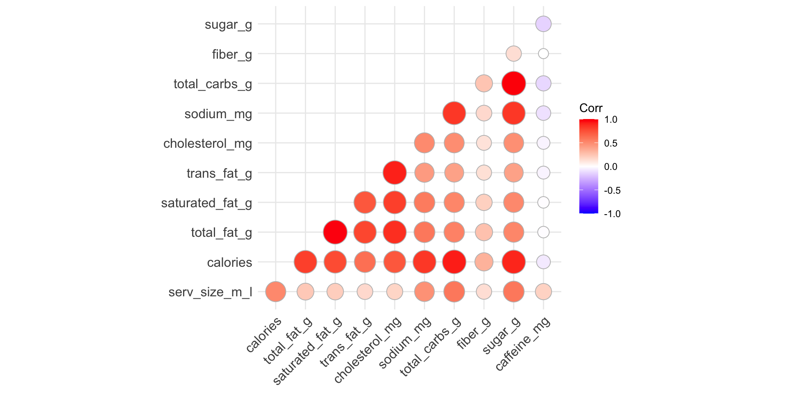Reorder variables based on correlation
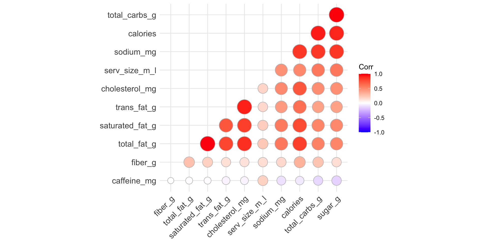Heatmap displays of observations
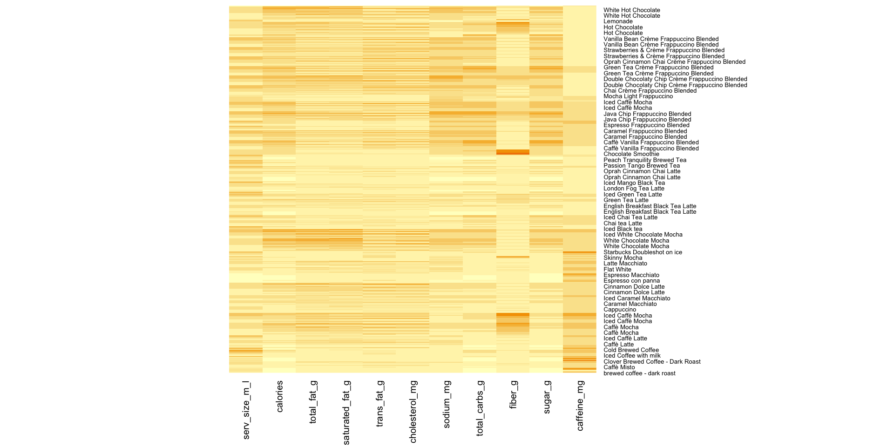Manual version of heatmaps
starbucks |>
dplyr::select(product_name, serv_size_m_l:caffeine_mg) |>
pivot_longer(serv_size_m_l:caffeine_mg,
names_to = "variable",
values_to = "raw_value") |>
group_by(variable) |>
mutate(std_value = (raw_value - mean(raw_value)) / sd(raw_value)) |>
ungroup() |>
ggplot(aes(y = variable, x = product_name, fill = std_value)) +
geom_tile() +
theme_light() +
theme(axis.text.x = element_text(size = 1, angle = 45),
legend.position = "bottom") Manual version of heatmaps
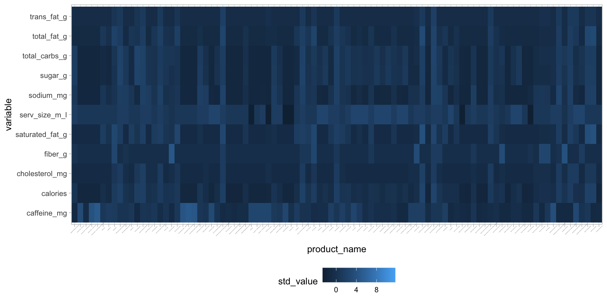
Manual version of heatmaps
starbucks |>
dplyr::select(product_name, serv_size_m_l:caffeine_mg) |>
mutate(product_name = fct_reorder(product_name, calories)) |>
pivot_longer(serv_size_m_l:caffeine_mg,
names_to = "variable",
values_to = "raw_value") |>
group_by(variable) |>
mutate(std_value = (raw_value - mean(raw_value)) / sd(raw_value)) |>
ungroup() |>
ggplot(aes(y = variable, x = product_name, fill = std_value)) +
geom_tile() +
scale_fill_gradient(low = "darkblue", high = "darkorange") +
theme_light() +
theme(axis.text.x = element_text(size = 1, angle = 45),
legend.position = "bottom") Manual version of heatmaps
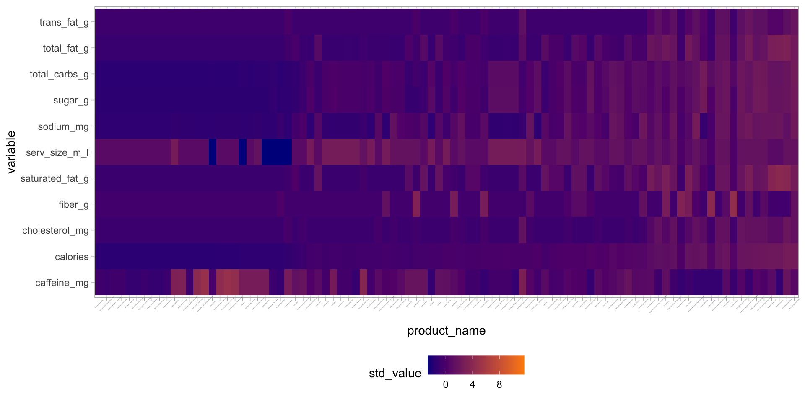
Parallel coordinates plot with ggparcoord
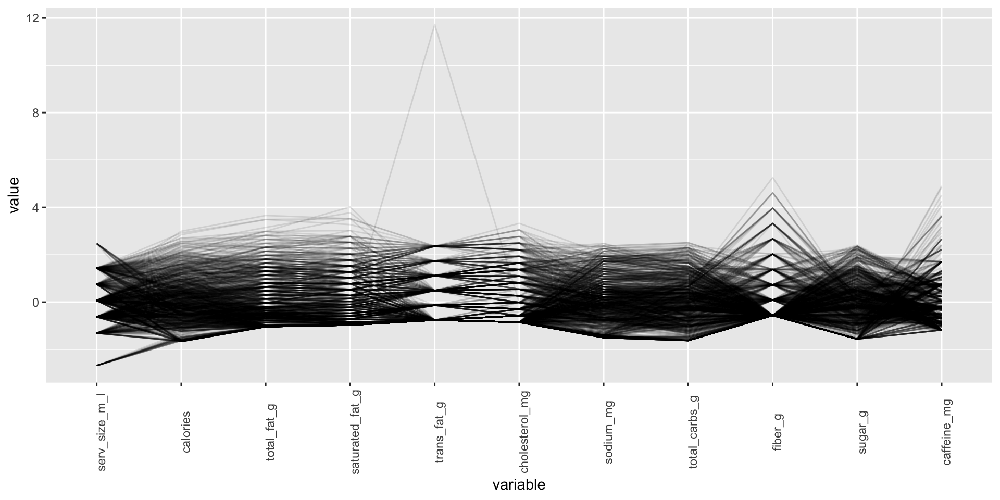Easier example with penguins…
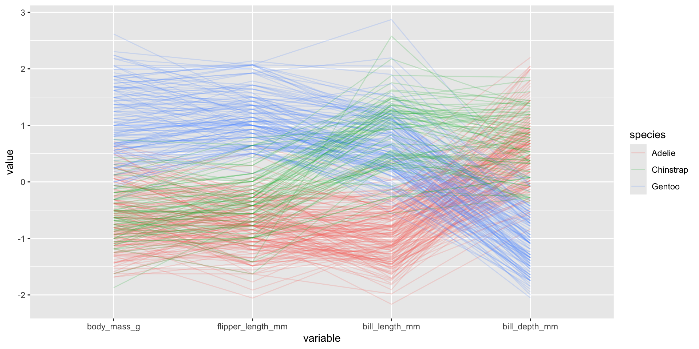Recap and next steps
We can extend kernel density estimation from 1 to \(p\)-dimensions (don’t say easily though…)
Contour plots: Common way to visualize two-dimensional densities
Heat maps: divide the space into a grid, and then color the grid according to high/low densities
Hexagonal bins: creating histograms in 2D
Correlograms and Parallel Coordinates Plots are helpful tools for visualizing high-dimensional data
HW5 is due Wednesday March 19th and you do NOT have lab this Friday!
Next time: Visualizing Distances and MDS